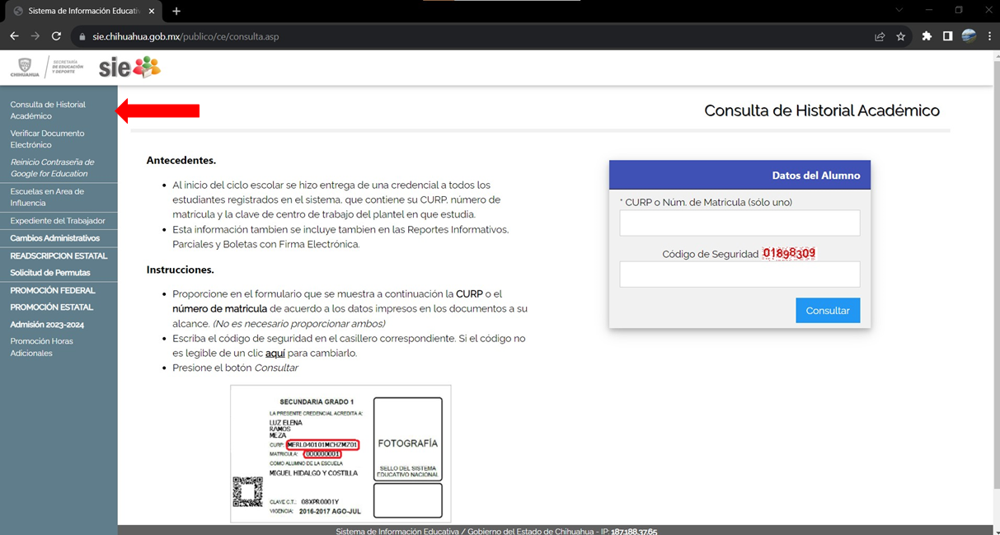
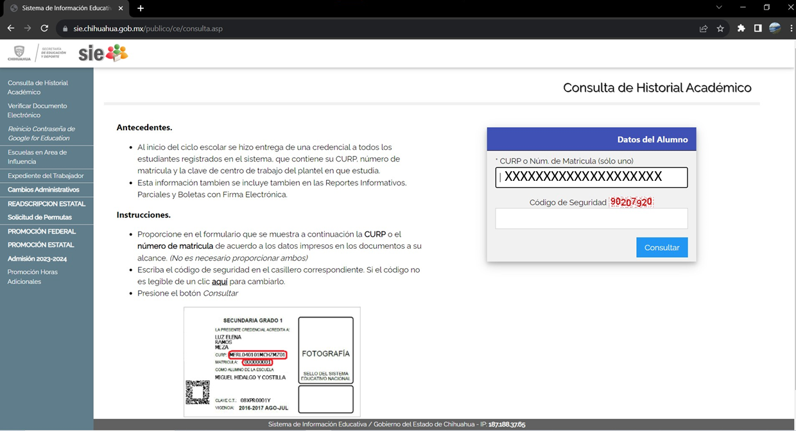
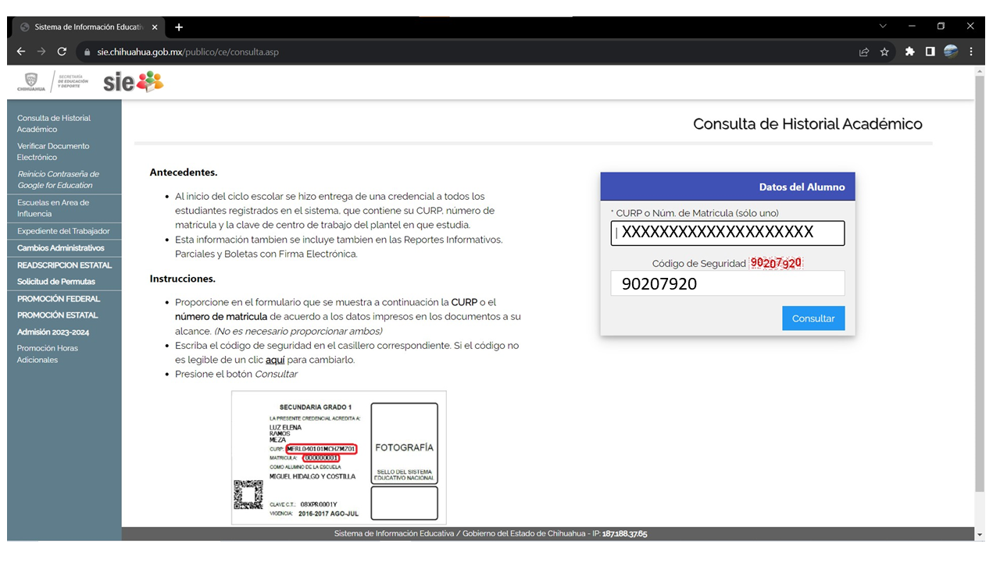
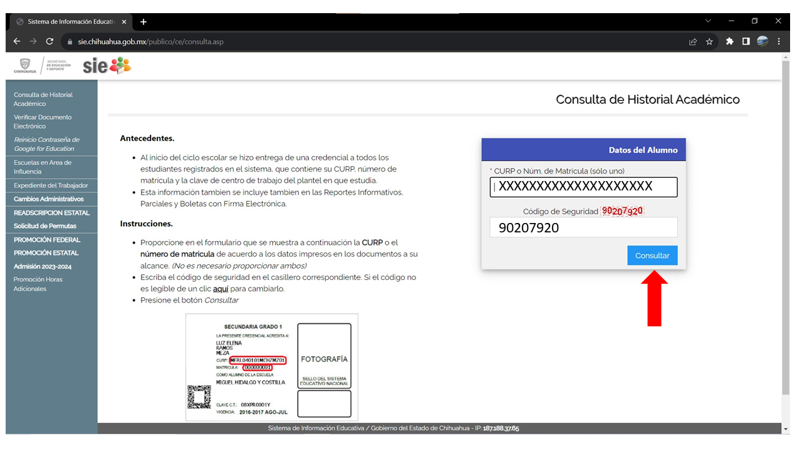

Instrucciones:
Inciamos primero dentro de la pagina "https://sie.chihuahua.gob.mx/"↑
Una vez adentro asegurese de estar en la pestaña "Consulta de Historial Academico"

iniciamos poniendo la CURP del alumno o la MATRICULA Nota:Solo es poner uno CURP o MATRICULA es su eleccion

Una vez puesta la CURP o MATRICULA deberera poner el codigo de seguridad

Una vez los datos llenos haga clik en la opcion "Consultar"
